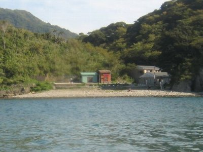
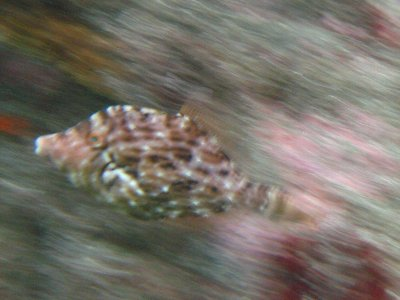

シュノーケル再び | 2009年9月 幹事：べっしー |
|---|---|
| 夏は終わらない。もう一度海へ。と言うことで、今回は男三人、伊豆の南端にある中木にシュノーケルに行きました。 もちろん、「行き」ましたが、天気はいいのに風が強いのか、波が高く、浜に渡る船が欠航。ここは、陸から浜には行けないので渡し船しかないんです。東京方面からのグループも、同じように空しく海を眺めています。天気いいからね〜 しばらく、茫然と「どうすべ・・」状態。すでに下は海パン。３時間かけてここまで来て、むざむざ帰るのも馬鹿らしく、とりあえず潜れる場所はないものかと、西伊豆を北上しました。 どこの浜も波が高く、泳いでいる人はいません。８月に行った田子の瀬海岸。ここに望みをかけて峠道を進みます。 | |
|  ほんと人少ない |  海は碧いっしょ |
| 田子の瀬海岸に着くと、車が何台か停まっていて、激混みだった８月に比べ３グループ位しかいない状態でした。 しかし、波もなく、青い空とコバルトブルーの海。いいね〜行けますよ！ 早速荷物を置いて（場所取りなんてどこでもOK)、海にGO! 前回の様なうねりもなく、海の透明度は高くて、魚も一杯見ることができます。人も少ないし、水も冷たくない。風があったので、水から上がるとちょっと寒いですが、お日様カンカンなので直ぐ乾いて気持ちいいです。 | |
 ウニと小魚 |  大きいのもいた |
| 午前中泳いだら、お昼を食べて、ちょっとお昼寝。場所はたくさんあるのでどこでも寝られます。TAKUが持ってきたPSPで音楽を流しながら、マッタリ時間を過ごしました。 午後もひと泳ぎ。３時位まで泳いでたかな？ 私の今回の撮影獲物は、前回見かけたイカもどき。これイカ？（だれか教えて） 今回は、前回より小さいイカもどきが、沢山いたんです。泳ぎも遅めなので、ついて行けちゃう。親指の先っちょ位の大きさ。 このイカもどきですが、初めは透明な体に茶色い筋が通っていて気がつきにくいんです。脚も閉じてるし。 危険を感じるのか、追いつかれそうになると脚を広げて体が黒くなっていきます。透明から黒ですよ！ そして丸くなっていくんです。まるで炙っているように。 | |
 いか？ って前回も聞いてるけど |  え〜と、ふぐ？かな流れすぎてわかりません |
| 帰りは温泉よって、沼津でおいしいラーメン食べて帰りました。 | |
| 写真＆コメント by べっしー | |